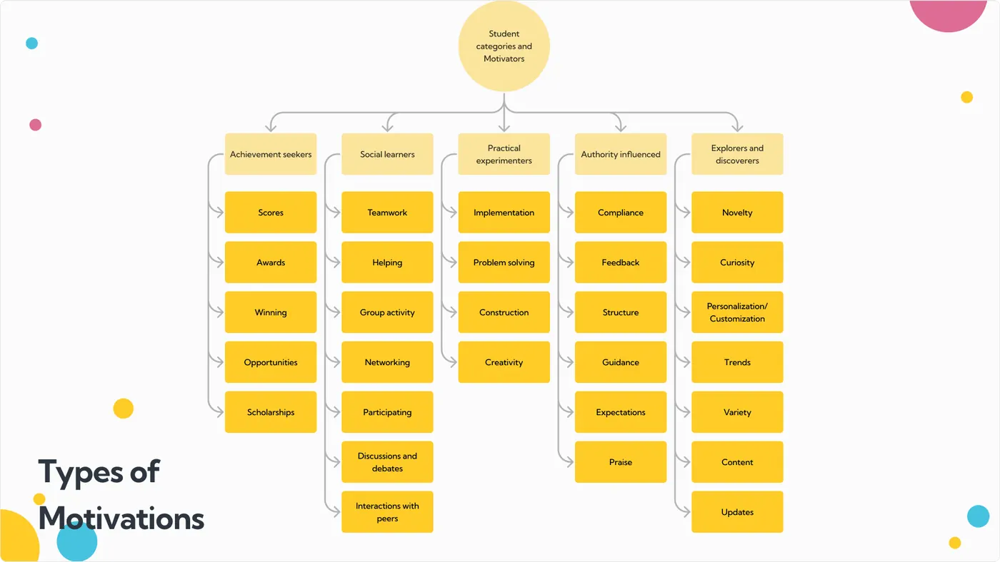
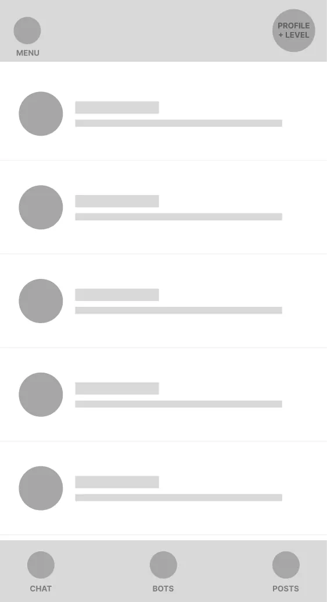
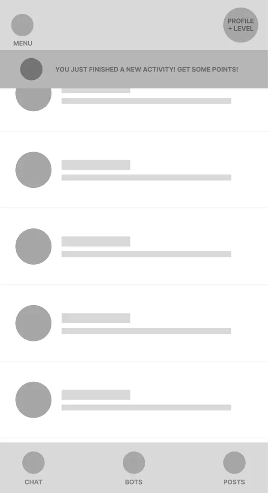
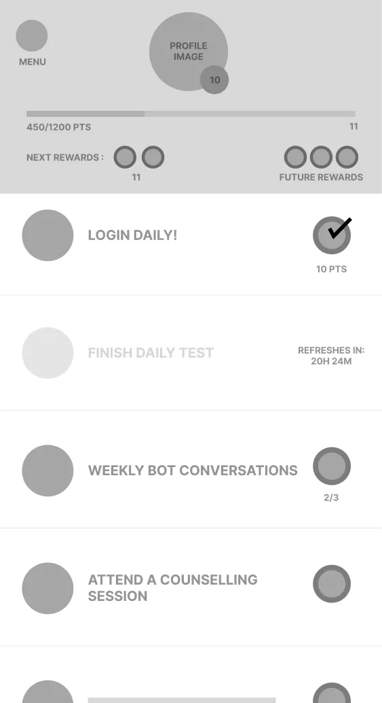
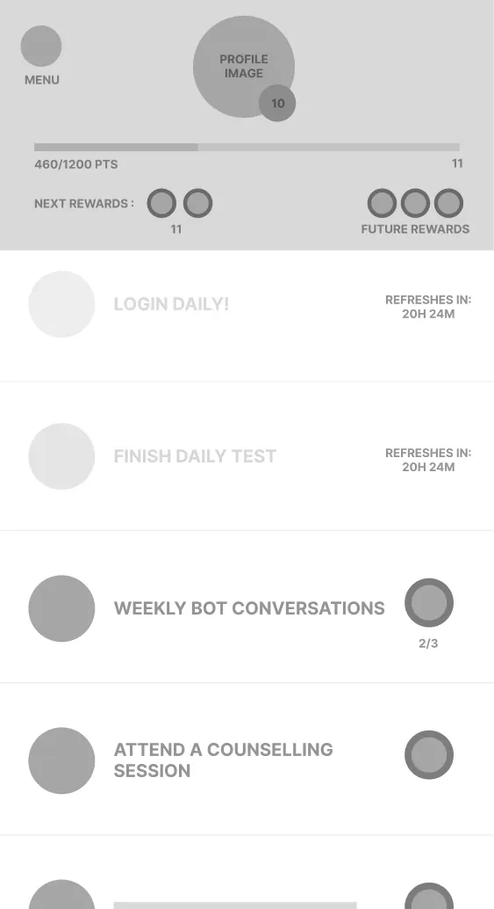
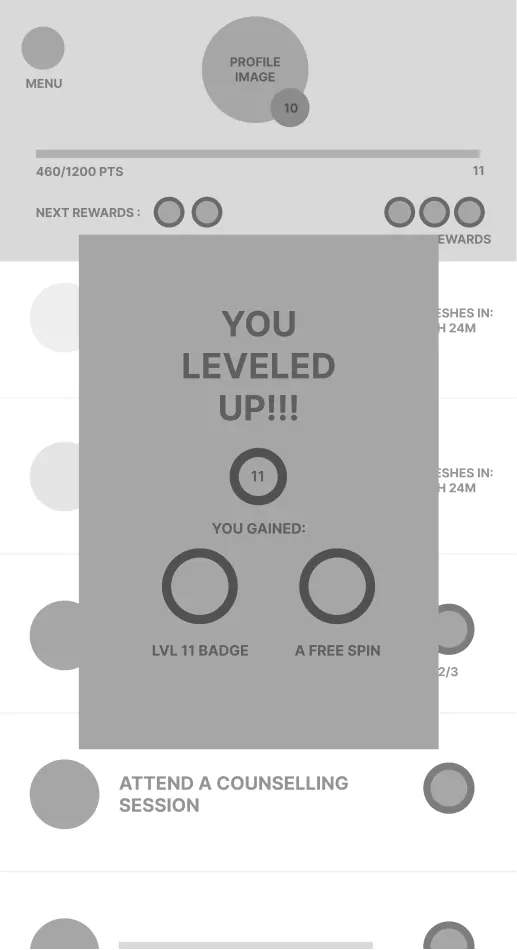
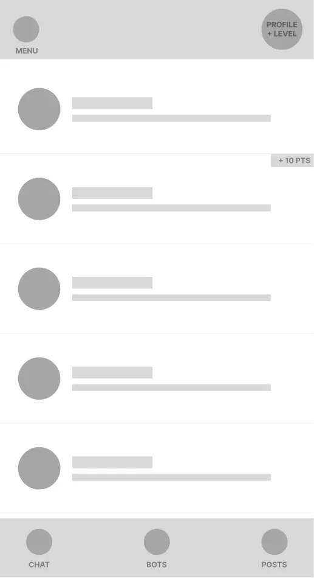
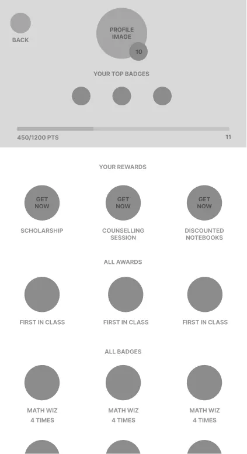

Gamification for a children's app seems like an obvious solution for engagement. How do you make it into a strategy?
Our client was ConveGenius — an education-technology company in India delivering value to schools in the private sector and for state governments. With 100,000 monthly active students, they had built a deep product with features across different subjects and verticals.
But students treated the app like homework, and only did what was mandatory. The team wanted to engage their students more deeply, and help them find learning to be fun. They came to us with the idea of adding a rewards layer.
Working with them, we broke rewards down into achievable segments — and created a structure where rewards and behaviors could change student learning to be more effective within the ConveGenius system.
User Research
Gamification
Motivation & Behavioral Design
India300+ employees₹75 Cr revenue
first — define what success means
Gamification is superficial — retention is a behaviour-change problem.
When designing new features, bringing clarity to success is key to the project's success. We helped the ConveGenius team define success around two goals — growth, to drive acquisition of students for under-used features, and engagement, to bring students back into the features they'd previously discovered.
Once success is defined, the question becomes how to measure it. By using the growth-vs-engagement model, we brought a simple split to the data — driving appropriate focus for judging feature success. Without this clarity, features can be judged on "easy" metrics (views, clicks), even when they're designed for bigger contributive purposes.
Growth vs Engagement activities
Growth activities
Traits
Focused on familiarising the user with the app. First-time usage gives a shiny reward. Catchy and easy to explain. Prompts users to talk to each other outside the product about the activity.
Ephemeral rewards · social rewards
Engagement activities
Traits
Focused on a singular user's learning growth. The longer you do it, the more rewarding it is. Requires investment, but is designed more catered specifically to user personas.
Collectibles · long-term achievement
rewards for growth can be transient and low-stakes
rewards for engagement support extended investment with higher stakes & deeper ability to engage (and earn!)
↓ goals set — now how do we hit them?
two axes — motivation × reward
With goals established, how do we achieve them?
Building on established theories about types of motivations and types of rewards, we created lists of possible features to make the rewards system real. The framing makes prioritization easier — the team can weigh the purpose (the type of reward) against the user (the kind of student) when discussing development cost.

different types of students will be biased towards different types of rewards — an additional layer to hone the system's efficacy
rewards vary based on growth or engagement goals — and will appeal to different kinds of students
↓ where does it actually live in the app?
the flow, end to end
With the concept clarified and goals agreed upon, what do you do to take it forward?
Moving from concept toward implementation requires answering where the system will fit in the app — both when new features will be interacted with, and how frequently they'll be part of the new user experience.
each type of reward has a target frequency and effort required from the student — successful adoption requires a balance between difficulty and reward
user-journey mapping, when adding a feature to an existing app, brings clarity on which screens will need to be touched and how the user's paths will change
↓ then — handed off, ready to build
wireframes — clean handoff
Clean handoff for development
Creating the low-fidelity wireframes — alongside the user-journey flows — is the step that creates the space needed for clarity in design / dev handoffs. It happens before the discussion about finer details around implementation (graphic elements, animations, etc.).







wireframes, once finalized, are also used to create the high-fidelity mocks that match the UI/UX